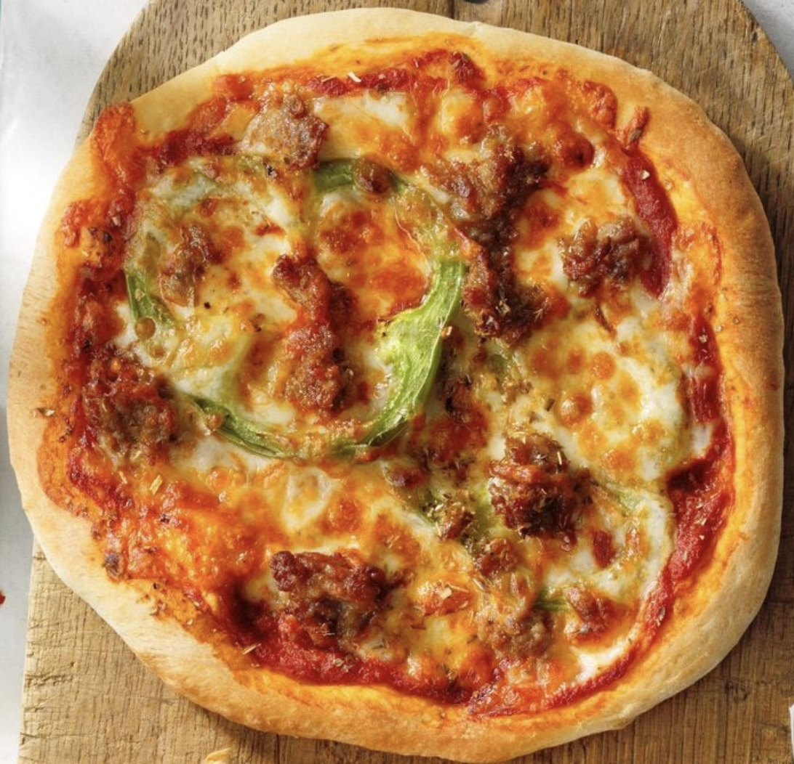
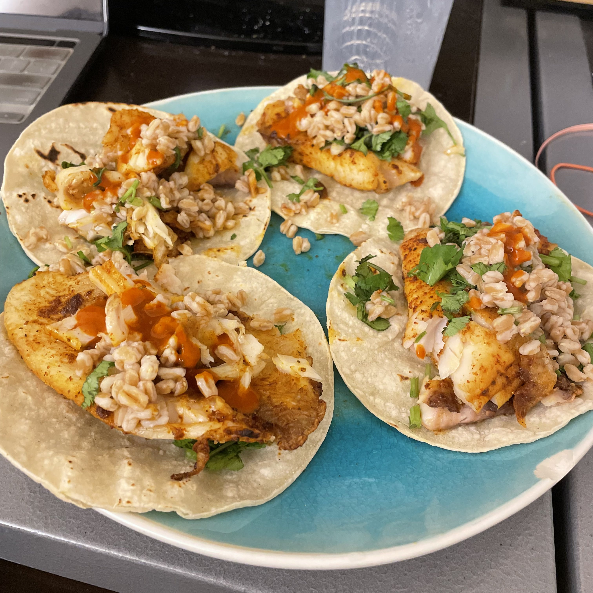
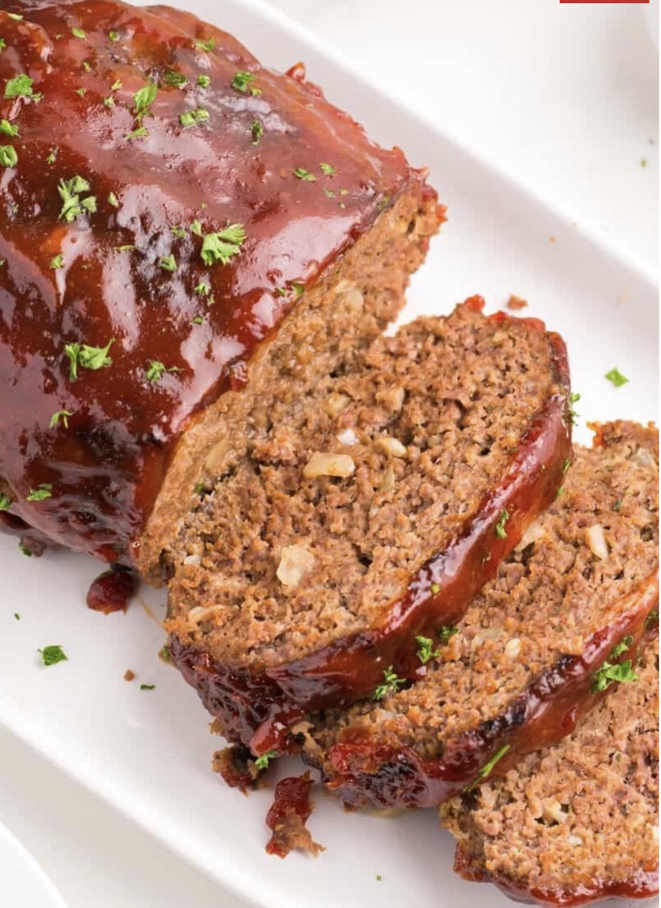

Dinner Recipies Introduction
Welcome to the Dinner Menu! This page is exclusively to whip up dinner delights using the magical powers of our trusty air fryer. Say goodbye to complicated recipes and hello to easy, crispy, and mouthwatering meals—all ready to dazzle your taste buds in no time. Get ready for a culinary adventure that'll make your air fryer the hero of your kitchen!
Pizza

Ingredients
- 1 loaf (1 pound) frozen bread dough, thawed or (instead of bread dough, try a prebaked crust or mini naan)
- 1 cup pizza sauce
- 1-1/3 cups shredded part-skim mozzarella cheese
- 1 teaspoon dried oregano
add in any desired toppings, here are a few you can use
- 1 small green pepper, sliced into rings
- 1/2 pound bulk Italian sausage, cooked and drained
- pepperoni slices
Pizza Instructions
- Dough Preparation:On a lightly floured surface, roll and stretch dough into four 4-in. circles. Cover; let rest for 10 minutes.
- Combine your Creation Preheat air fryer to 400°. Roll and stretch each dough into a 6-in. circle. Place 1 crust on greased tray in air-fryer basket. Carefully spread with 1/4 cup pizza sauce, 1/3 cup sausage, 1/3 cup cheese, a fourth of the green pepper rings and a pinch of oregano.
- The Final Touch:Cook until crust is golden brown, 6-8 minutes. If desired, sprinkle with red pepper flakes. Repeat with remaining ingredients.
Fish Tacos

Ingredients
- 4-8 Tilapia fillets
- 1 can (4 ounces) chopped green chiles
- 1 tablespoon fresh cilantro leaves
- 1 tablespoon lime juice
- 3/4 cup reduced-fat sour cream
- 1/2 teaspoon each white pepper, cayenne pepper and paprika
- 1 tomato diced
- 8 corn tortillas (6 inches), warmed
Fish Tacos Instructions
- Sauce Preparation: Place sour cream, chiles, cilantro and lime juice in a food processor; cover and process until blended. Set aside.
- Air Fry: Preheat air fryer to 400°. In batches, arrange fillets in a single layer on greased tray in air-fryer basket; spritz with cooking spray. Cook until fish flakes easily with a fork, 10 minutes, turning once.
- Final Touches: Place a portion of fish on each tortilla; top with about 2 tablespoons sour cream mixture. Sprinkle with tomato. If desired, top with additional cilantro.
Meatloaf

Ingredients
- 2 pounds 80/20 ground beef
- 2 large eggs
- 1/4 cup milk
- 2/3 cup Italian breadcrumbs
- 1 packet McCormick's meatloaf seasoning packet (1.5 ounce)
- 1 tablespoon Worcestershire sauce
- 1/4 teaspoon Salt and pepper
Toppings
- 1 cup ketchup
- 1/2 cup light brown sugar
- 1 tablespoon dijon mustard
- 1/2 tablespoon Worchestershire sauce
Meatloaf Instructions
- Getting StartedPreheat the air fryer to 350 degrees. Next combine the beef, eggs, milk, bread crumbs, meatloaf seasoning, and Worcestershire sauce in a large bowl. You can use a big spoon or just mix it with your hands.
- Air Fryer Form the meatloaf mixture into a loaf shape, then place it in the preheated air fryer basket. I recommend spraying the basket with some oil so the meatloaf is easy to take out after cooking.
- Cooking TimeCook the meatloaf for 25 minutes.
- Final TouchesAt 25 minutes, spoon 1/4 cup of the topping mixture onto the meatloaf, just enough to cover it. Place the loaf back in the air fryer for 5-10 more minutes or until a meat thermometer reads 165 degrees. Allow the meatloaf to rest for 5 minutes before slicing.